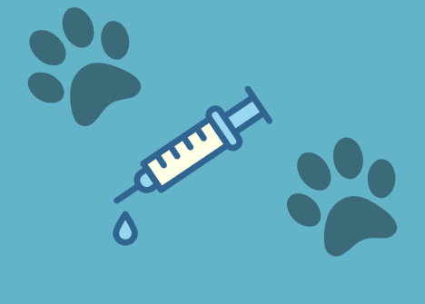
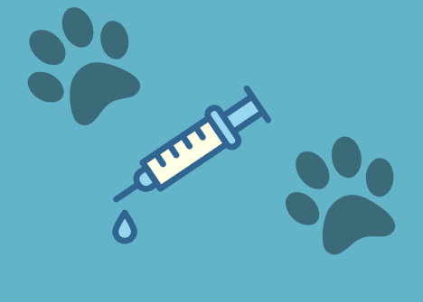

Cuidando do Seu Pet com
Profissionalismo e Carinho
 

Campanha de vacinação
Nos dias 19 a 28 de novembro


Campanha de adoção
Dê um lar cheio de amor a quem só quer te fazer feliz! Adote um amigo de quatro patas e transforme sua vida e a dele.


Banho e tosa: cuidado e saúde para seu pet
Nossa clínica dispõe do serviço de higiene para seu pet permanecer limpo, cheiroso e longe de parasitas.